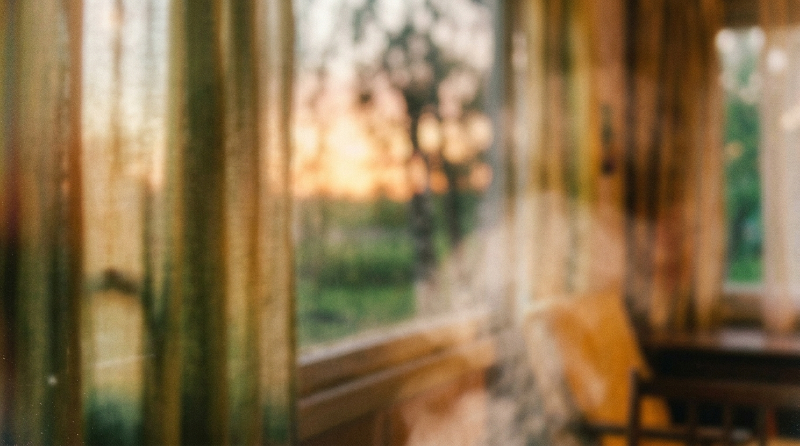

«Вкус, который помнит время»
Выставка «Культурный код России: Вкус ностальгии» — это путешествие сквозь эпохи. От жаркого пламени русской печи до императорских банкетов, от советских столовых до бабушкиной кухни.
Прокручивайте панорамы вручную (мышью или пальцем), изучайте экспонаты. Карточки с керамикой отмечены особым оттенком. Откройте блюдо — внутри ждёт история, детальный рецепт и список ингредиентов. Сохраняйте любимое в Книгу рецептов!